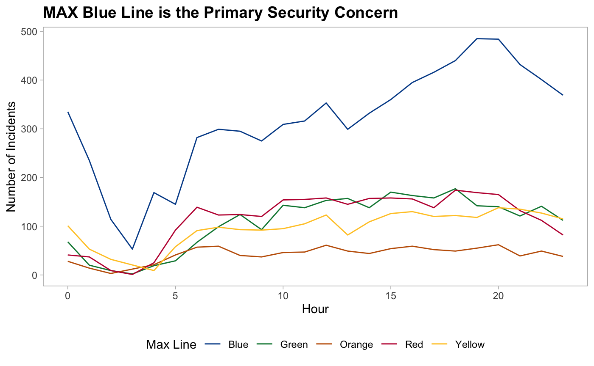

Demystifying TriMet’s Data: Uncovering Truths to Ensure a Safer Commute
Empowered by Data, Propelled by Insight, A Journey Towards Safer Public Transit System192
What’s the Story?
Witnessing an astonishing 59% rise in security incidents between 2010 and 2022, and an unprecedented 36% spike in 2022 alone, we confront the daunting question - what lies at the heart of this security crisis?
There appears to be surge of security incidents during the transition from Spring to Summer 2022:
So what happened in the Summer of 2022 & where did these incidents occur?
Journeying through the labyrinth of data, we reveal the pulse of danger at transit centers, where multiple routes converge, demanding strategic fortifications to protect those who traverse them daily. Gazing into the heart of the transit system, the MAX Blue Line looms large, with its staggering ridership and 20% association with all security incidents in 2022. Can we unveil the secrets behind this enigmatic connection?
Gazing into the heart of the transit system, the MAX Blue Line looms large, with its staggering ridership and 20% association with all security incidents in 2022. Can we unveil the secrets behind this enigmatic connection?
Examining Incidents Per Hour among MAX routes, 2010 - 2023:

Despite the massive increase in security incidents in 2022, violent incidents dropped:
While this data includes all of Oregon, we are treating drug overdose deaths as a metric of severity of how drugs of abuse are affecting our community:
The visuals below show the top 10 locations with the highest average monthly rates of a specific type of incident in 2022. They highlight the locations most impacted by violence, drugs, and vandalism, guiding our focus for targeted intervention strategies.
No matching items